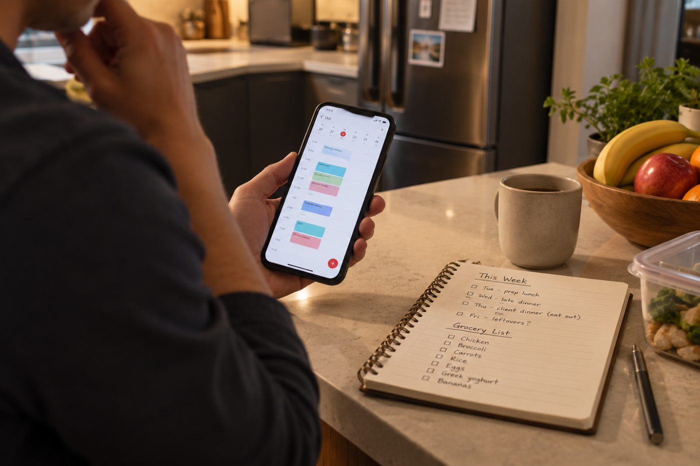
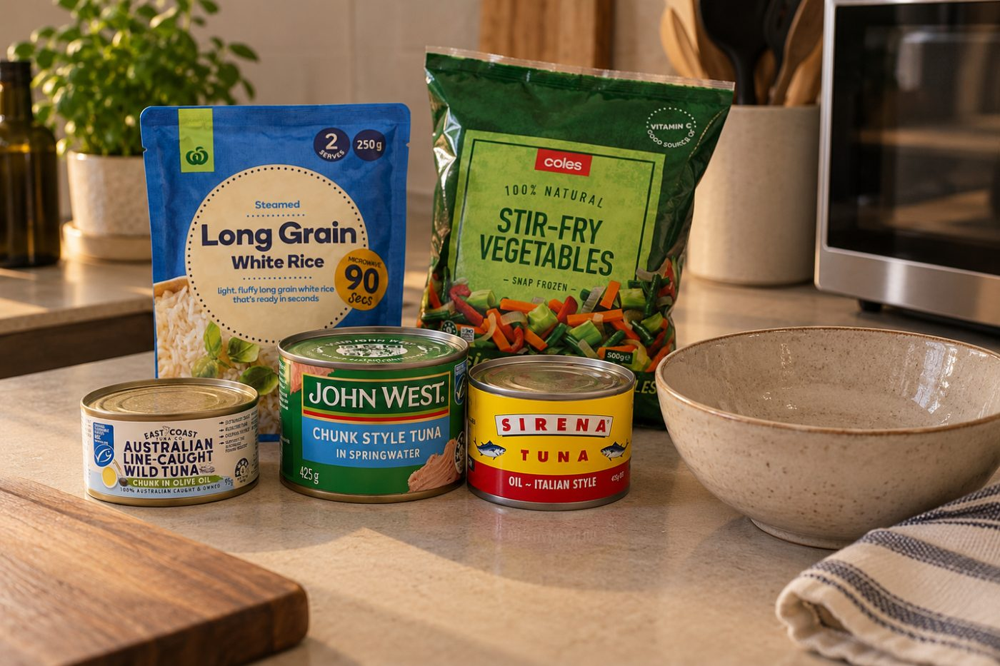

You don’t need to spend three hours meal prepping on Sunday. You need 20 minutes to make eating well the easier decision when your calendar gets messy.
For most busy business owners, the problem isn’t knowing that chicken and vegetables are probably a better everyday option than takeaway.
The problem is Wednesday at 7PM.
You’ve had back-to-back meetings.
Something urgent came up at 4PM.
You’re leaving later than expected.
You get home hungry and open the fridge.
Nothing is ready.
At that point, you’re not thinking about your nutrition goals.
You’re thinking:
“What’s quickest?”
And that’s exactly why traditional meal prep doesn’t work for everyone.
You don’t necessarily need seven identical containers lined up in your fridge every Sunday.
You need a system that removes decisions when you’re busiest, hungriest and least interested in making another decision.
That’s what this 20-minute system is designed to do.
Set a timer for 20 minutes.
You’re going to do four things:
Calendar → Defaults → Prep → Backup
Not prepare your entire week.
Just make your busiest days easier.
Before deciding what to cook, look at your actual week.
Ask yourself:
Which days are packed with meetings?
Which nights am I likely to finish late?
When am I eating away from home?
Do I have client lunches or dinners?
Which days could realistically fall apart?
This matters because there’s little point preparing five lunches if you’re eating out three times.
Instead, identify the two or three meals most likely to become a problem.
Maybe Tuesday has six meetings.
Wednesday you’re working late.
Thursday you’ve got a client dinner.
Great.
Now you know what you’re preparing for.
Australian dietary guidance supports planning meals and snacks ahead rather than leaving food decisions entirely to the moment. Eat For Health

Next, remove some decisions.
Choose:
One default lunch.
One default dinner.
Something you genuinely like and can assemble quickly.
A simple starting framework is:
Protein source + vegetables + carbohydrate source
For example:
Chicken + salad + rice
Tuna + vegetables + wholegrain toast
Beef + vegetables + noodles
Chickpeas + roasted vegetables + couscous
It doesn’t need to be exciting enough for a restaurant menu.
It needs to be something you’ll actually eat on a Wednesday night when you’ve finished work late.
And “easy” doesn’t automatically mean nutritionally poor.
Frozen vegetables, canned legumes, canned fish and other convenient ingredients can all play a useful role in quick meals. Australia’s Eat for Health resources specifically suggest options such as frozen vegetables, tuna, legumes and leftovers for quick meals. Eat For Health
The goal isn’t culinary perfection.
It’s removing:
“What am I going to eat?”
from an already overloaded day.
This is where most people misunderstand meal prep.
You don’t have to cook everything.
Ask:
“What is the one thing that would make meals easier this week?”
Maybe it’s:
You may not finish cooking everything within these five minutes, and that’s fine.
The 20 minutes is your setup time, not necessarily the total cooking time.
If something can cook in the background while you continue with your evening, even better.
Australian Government guidance recommends cooking extra portions and freezing leftovers for another day or taking them to work for lunch as a practical way to save time and reduce reliance on takeaway. Department of Health
So if you’re cooking dinner anyway, make tomorrow’s lunch at the same time.
Cook once. Solve two meals.
This might be the most important five minutes.
Because your calendar will change.
A meeting will run over.
Someone will need something urgently.
You’ll get home later than expected.
Your meal-prep system needs to survive that.
Create three backups.
Have a meal you can assemble in approximately five minutes.
For example:
Frozen vegetables + microwave rice + tuna
Eggs + wholegrain toast + vegetables
Frozen vegetables + canned beans + rice
Government healthy-eating resources specifically identify frozen vegetables, canned tuna, legumes and leftovers as useful ingredients for quick meals. Eat For Health
Keep something available for the days when lunch disappears between meetings.
That might be:
Know your default takeaway order before you need it.
You might have two or three nearby places where you already know what you’ll order.
For example:
Chicken + salad + rice
Sushi + a protein-containing option
Grilled meat + vegetables
Wrap + salad
Australian Government guidance recommends options such as wraps and other bread-based meals, including extra vegetables or salad, and choosing grilled rather than fried options when eating out. Eat For Health
You don’t have to eliminate takeaway.
You need to eliminate the 8PM decision when you’re starving and mentally finished for the day.

Save this in your phone:
Find the 2 to 3 meals most likely to go wrong.
Choose one lunch and one dinner you can repeat.
Remove the biggest bottleneck.
Make sure you’ve got an option at home, at work and for a late finish.
Then:
Stop.
Don’t turn meal prep into another project to manage.
The point of the system is to save time and decisions during the week, not consume another chunk of your weekend.
Imagine you’re looking at next week’s calendar.
Relatively normal.
Six meetings.
Late finish.
Client dinner.
Working from home.
Traditional meal prep might tell you to prepare ten containers.
You don’t need ten containers.
Your 20-minute planning session might reveal that Tuesday lunch and Wednesday dinner are the only meals you really need to solve.
So you decide:
Make extra chicken with dinner and portion some for Tuesday.
Your lunch is already decided. Grab it between meetings.
You know you’re finishing late, so there’s a five-minute backup meal waiting at home.
Enjoy the client dinner.
You’re home and can make something fresh.
You’ve just protected the most vulnerable parts of your week without spending half of Sunday meal prepping.
That’s the difference between following a meal plan and building a system around your life.
Business owners make decisions all day.
Staff.
Clients.
Cash flow.
Sales.
Problems.
Opportunities.
Then you get home and ask yourself:
“What should I eat?”
It’s another decision.
That’s why this system isn’t really about meal prep.
It’s about making important decisions before you’re tired, hungry and short on time.
Your Tuesday lunch has already been decided.
Your late-night backup has already been decided.
Your takeaway option has already been decided.
That’s the ROI on those 20 minutes.
Not seven perfectly arranged containers.
Fewer decisions when your energy and attention are needed somewhere else.
Set a 20-minute timer.
Open your calendar.
Identify your two most difficult meals.
Choose your defaults.
Remove one preparation bottleneck.
Create your backup.
Then get on with your weekend.
Don’t aim for a perfect week.
Aim to make your busiest day easier.
Your nutrition shouldn’t depend on your business becoming less busy.
Because chances are, it won’t.
The solution isn’t spending hours every Sunday preparing every meal you’ll eat.
It’s having a system that works when the calendar changes, the meeting runs over and you get home later than planned.
At UHP, that’s how we approach nutrition for business owners:
Plan around the calendar.
Reduce unnecessary decisions.
Create reliable defaults.
Always have a backup.
Because a health system only works if you can actually keep using it when business gets busy.
Want a health and performance plan built around your actual calendar?
Insights only go so far. A personalised program, built around your life, is what actually moves the needle. Book a free consultation and find out what that looks like for you.